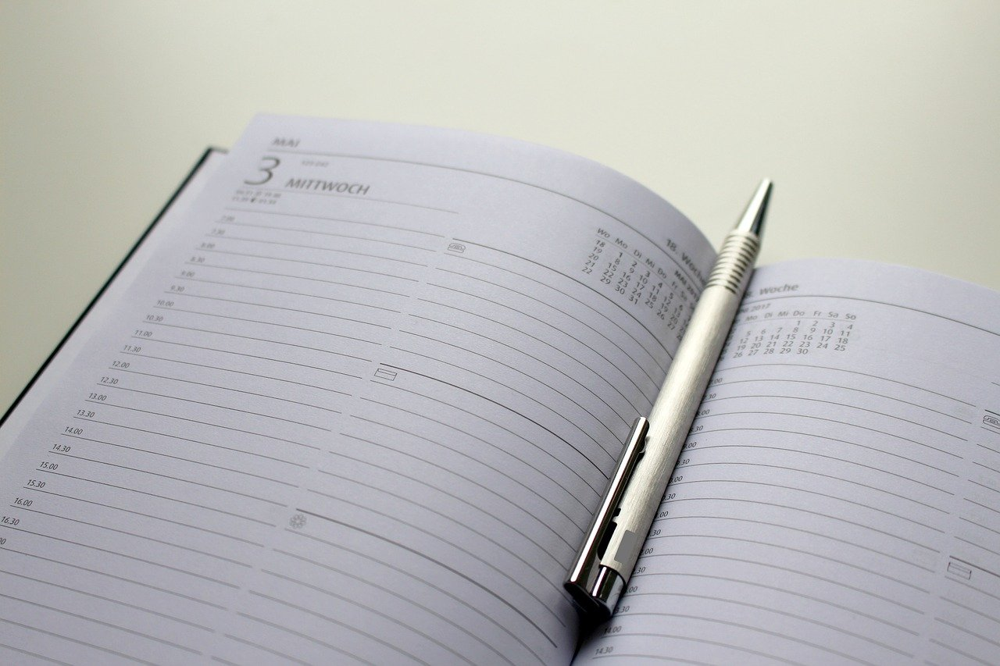

Tapahtuman turvallisuussuunnittelu ei ole missään nimessä nopeasti tehty, joten siihen kannattaa varata aikaa.
Jokainen suunnittelee oman aikataulunsa tietenkin itse, mutta tässä muutamat hyvät askelmerkit sujuvaan turvallisuussuunnitteluun.
Askelmerkit ovat aikataulutettu siten, että turvallisuussuunnittelun ohella jää aikaa myös varsinaisen tapahtuman suunnitteluun sekä järjestämiseen.
- Aloitus: 3kk ennen tapahtumaa
Turvallisuussuunnittelu aloitetaan turvallisuustyöryhmän kokoamisella ja avainhenkilöiden, esimerkiksi turvallisuudesta vastaavan henkilön, nimeämisellä, sekä työryhmän sitouttamisella turvallisuussuunnitteluun.
Työryhmä sopii aikataulusta ja käy läpi agendan. Jos ryhmällä ei ole aikaisempaa kokemusta turvallisuussuunnittelusta, on hyvä käydä läpi tapahtumaturvallisuuden perusasiat, sekä dokumenttien tavoitteet.
Työtyhmä sopii, milloin dokumenttien tulee olla valmiita, jotta mahdollisille viranomaisten vaatimien muutosten, lisäysten tai tarkennuksien tekemiselle jää riittävästi aikaa ennen tapahtumaa ja päivämäärää, jolloin turvallisuusdokumenttien tulee viimeistään olla viranomaisen tarkastettavana (14vrk ennen tapahtumaa).
- Riskien kartoitus/tunnistaminen: 6–8 viikkoa ennen tapahtumaa
Turvallisuustyöryhmä tekee riskien kartoituksen ryhmänä, esimerkiksi 3–8 henkilöä. Ryhmän siksi, että useampi erilainen näkökulma antaa monipuolisemman näkökulman tapahtuman aikana ilmenevistä erilaisista riskeistä, onnettomuuksista ja vaaratilanteista, kuin yksin tai parityönä tehty kartoitus.
Hyvä keino riskien kanssa toimimiseen on kirjata riskit ylös, esimerkiksi tekemällä riskitaulukko. Taulukointi on hyvä keino pitää riskienhallinta prosessi selkeänä ja helposti muokattavissa muuttuvien mahdollisesti uusia riskejä tunnistettaessa.
- Riskitaulukoiden käyttö aloitetaan riskien tunnistamisella. Tämä tarkoittaa uhkien tunnistamista, jolloin uhkat kirjataan taulukon ensimmäiseen sarakkeeseen.
- Toiseen sarakkeeseen merkataan uhkan aiheuttamat seuraukset eli riskit, sen toteutuessa.
- Kolmanteen sarakkeeseen lasketaan toteutuneelle riskille riskiarvo.
Taulukoissa on käytetty laskentakaavaa todennäköisyys (1 hyvin epätodennäköinen – 5 hyvin todennäköinen/varma), joka kerrotaan seurauksen vakavuuden toiseen potenssiin (1 vähäinen – 5 erittäin vakava).
esimerkiksi: 1 x 52= 25
- Kun riskille on laskettu arvo, aloitetaan niiden toimenpiteiden läpikäyminen, joita riskien varalle on jo olemassa.
Nykyiset toimenpiteet merkataan riskitaulukon neljänteen sarakkeeseen.
- Tämän jälkeen riskien pienentämiseksi suunnitellaan toimenpiteet, joilla joko riskin todennäköisyyttä tai seurauksen vakavuutta voidaan pienentää tai poistaa kokonaan. Nämä kirjataan riskitaulukon viidenteen sarakkeeseen.
- Kuudenteen sarakkeeseen lasketaan toimenpiteillä saavutettu jäännösriski samalla laskentakaavalla kuin alkuperäinen riskiarvo on laskettu
(kts. esimerkki)

Apua riskien tunnistamiseen saa esimerkiksi Pelastuslaitoksen pelastussuunnitelmapohjasta.